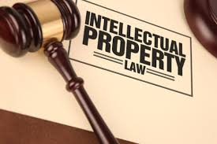

Overview
Intellectual Property (IP) laws protect the rights of creators and inventors by granting them exclusive rights to their creations. These laws cover a wide range of intellectual property, including patents, trademarks, copyrights, and trade secrets. IP laws aim to foster innovation and creativity by providing legal protection and incentives for creators. Source:
World Intellectual Property Organization
Infographic

Relevant Government Pages
Intellectual property and your work
Intellectual property: Law and practice
Online Resources
Intellectual property -wiki
Relevant News Articles
intellectual property the Guardian
What is Copyright?